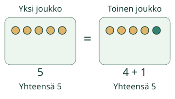
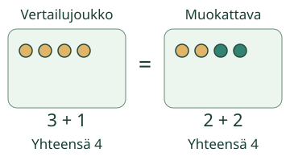
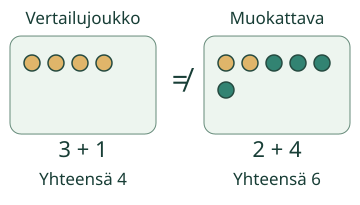

Tee määristä yhtä suuret

Aava vertaa kahta kulhoa. Toisessa on 5 marjaa, toisessa 4. Muuta määrää, kunnes marjoja on yhtä monta.
Mitä merkki = kertoo?
Merkki = tarkoittaa ”on yhtä paljon kuin”. Marjoja on yhtä monta, kun kummassakin kulhossa on 5. Voit kirjoittaa 5 = 5. Merkin kumpikin puoli kertoo saman määrän.
Myös osista syntyvä määrä voi olla yhtä suuri kuin toinen määrä. 5 = 4 + 1: vasemmalla 5 ja oikealla 4 sekä 1 lisää, yhteensä 5. Voit kirjoittaa myös 4 + 1 = 5.

Molemmilla puolilla saa olla lasku


Muuta kokeilussa myös esineiden välejä tai vaihda puolia. Lukumäärä ei muutu, kun esineitä ei lisätä eikä poisteta.
Kokeile uutta tilannetta
Avaa sama kokeilu tähän ja valitse sen Tilanne-valikosta Uusi tilanne: napit. Tilanteen vaihtaminen aloittaa uuden vertailun. Vertaa kaikkia nappeja. Tee määristä yhtä suuret ja tarkista. Voit käyttää kuvia, pareja tai laskemista.
Jatka määrien vertailua tässä
Malli on ilman JavaScriptiä alkuperäisessä kohdassaan: avaa mallin kohta.
Lisähaaste ilman ruutua
Tee 6 napista kaksi joukkoa, joissa on yhtä monta. Jaa sitten toisen joukon napit kahteen osaan. Ovatko kokonaiset joukot yhä yhtä suuret? Kokeile myös tyhjiä joukkoja: 0 = 0.
Lopuksi: Mitä 5 = 4 + 1 kertoo? Miksi = voi olla myös ennen laskua?
Opettajalle ja ilman ruutua
Luokat 1–2. Tavoite: ymmärtää yhtäsuuruus kahden määrän väliseksi suhteeksi. Kanoninen concept/atomic, pakollinen M-NUM-03. Pienet osat ja + selitetään kuvien avulla; tästä ei tehdä PLUS-, ADD- tai ARITH-lisäporttia.
Vertaa nappeja pareittain. Vaihda toisen rivin välejä muuttamatta määrää. Kirjoita 4 = 4, 4 = 3 + 1 ja 3 + 1 = 2 + 2. Jos käytät oikeaa vaakaa, lukumäärästä voi päätellä tasapainon vain, kun kappaleiden massat ovat samat ja vaaka soveltuu vertailuun. Tämän sivun määrämalli ei simuloi punnitsemista.
Kuva näyttää määrät ja vertailun merkin heti. Tämä on tutkiva opetustuki, ei riippumaton koetulos. Tarkistus nimeää nykyisen tilanteen; puolten tai välien vaihto säilyttää yhtäsuuruuden. Mallin, vihjeen tai selityksen katsomista ei tulkita itsenäiseksi osaamiseksi. Ei henkilöhistoriaa, pysyvää hallintaa tai oppimisvaikutusväitettä. Pelilinkit varmistetaan verkon erillisessä kuoressa. Aikuinen voi lukea tekstit.